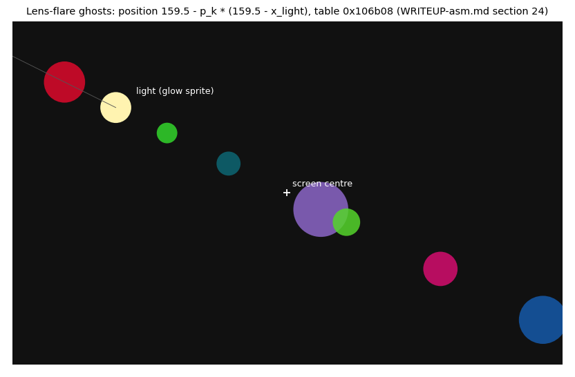
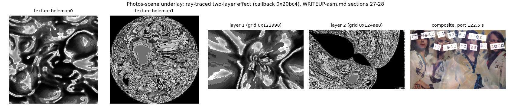
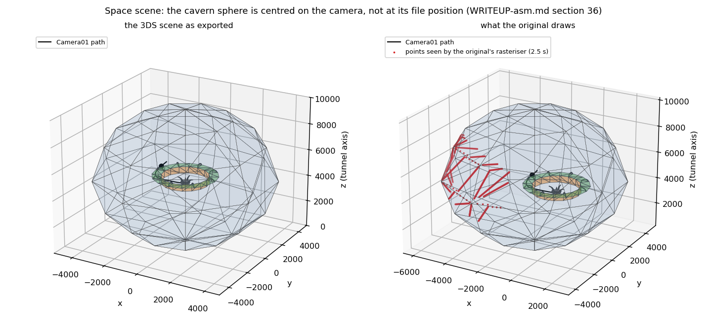
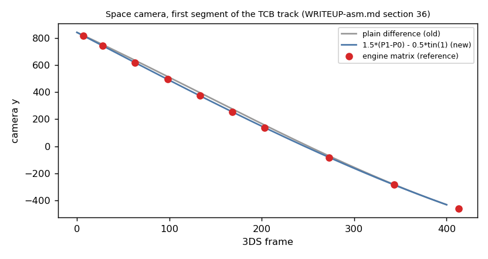
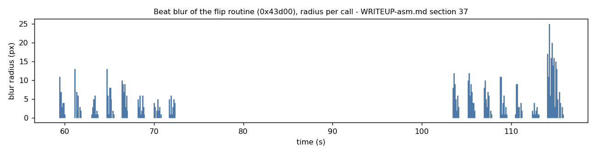

All listings come from the unpacked HYPER.EXE
(re/mem_clean.bin, linear == file offset; reproduce with
python3 re/ds.py ADDR N). Code is Watcom C++ 32-bit (flat,
PMODE/W). Addresses are the real ones; the immediates
0x12345678 are placeholders that the demo patches at run
time (self-modifying code, see snippet 3).
5a574 shr ecx, 6 ; ecx = interpolated 1/z (fixed point) -> 16-bit depth
5a577 mov [0x21bdc4], ebx ; spill u (16.16)
5a57d cmp cx, [esi+ebp*2] ; 16-bit Z-buffer test, esi = zbuffer row, ebp = -pixels (counts up to 0)
5a581 mov [0x21bdc8], edx ; spill v (16.16)
5a587 jae 0x5a603 ; hidden -> skip the whole pixel
5a589 shr ebx, 16 ; u integer part
5a58c and edx, 0xff0000 ; v integer part, already *65536 ...
5a592 shr edx, 8 ; ... -> v*256 : textures are hard-wired 256 texels wide
5a595 and ebx, 0x12345678 ; u mask (patched with the texture size - 1)
5a59b mov [0x21bc90], eax ; spill the light accumulator
5a5a0 xor eax, eax
5a5a2 mov al, [ebx+edx+0x12345678] ; texel (8-bit paletted); displacement = texture base (patched)
5a5a9 mov dh, [0x21bc8a] ; dh = red light level (Gouraud, one byte per channel)
5a5af mov edi, [0x21bdd0] ; destination row
5a5b5 mov bh, [0x21bc92] ; bh = blue light level
5a5bb mov dl, [eax*4+0x12345678] ; palette R (palette apparently stored as interleaved byte tables - inferred from the 4-byte stride)
5a5c2 mov bl, [eax*4+0x12345678] ; palette B
5a5c9 mov [esi+ebp*2], cx ; Z-buffer write
5a5cd mov ch, [edx+0x149a18] ; shade LUT: [light<<8 | colour] -> lit colour (no multiply)
5a5d3 mov dl, [eax*4+0x12345678] ; palette G
5a5da shl ecx, 8
5a5dd mov dh, [0x21bc8e] ; green light level
5a5e3 mov cl, [ebx+0x149a18]
5a5e9 mov eax, [0x21bc90]
5a5ee mov ebx, [0x21bdc4]
5a5f4 mov ch, [edx+0x149a18]
5a5fa mov edx, [0x21bdc8]
5a600 mov [edi+ebp*4], ecx ; one 32-bit pixel, 3 table lookups, 0 multiplies
5a603 mov esi,[0x21bc88] ... add esi,0x12345678 ... add edi,0x12345678 ; step the three light levels / z (patched constants)
5a64a add ebx, esi ; u += du
5a64c add edx, edi ; v += dv
5a655 jne 0x5a574 ; loop, max 16 pixelsWhat is clever: the 8-bit palette is pre-split into byte tables and
the lighting multiply is a 64 KB LUT at 0x149a18
([row*256+colour] = floor(colour*row/64), row = integer
part of the interpolated light, 0..63; measured by dumping the table
from the emulator), so Gouraud shading in true colour costs three
dependent byte loads. Depth is 16 bit and compared with the same
register that is used as cx for the store, so test+write
share one instruction pair. The loop counter doubles as the destination
index ([edi+ebp*4] with ebp negative and
incrementing to zero).
5a2c8 fild dword ptr [0x21bdc4] ; x offset of the span start
5a2ce fld dword ptr [0x21bd38]
5a2d4 fld qword ptr [0x10b920]
5a2da fmulp st(2)
... ; u/z, v/z, 1/z evaluated at the span start (plane equations)
5a308 fld1
5a30a fdiv st(3) ; 1/(1/z) = z : ONE divide per span, issued here ...
5a30c shr ecx, 0x10 ; ... while the integer unit continues with span set-up
5a315 fld st(2) / fld st(2) / fmul st(2) ...
5a321 fistp dword ptr [0x21bd74] ; u, v of the span start as integers
5a327 fistp dword ptr [0x21bd78]
5a347 fld1
5a349 fdiv st(3) ; second divide (span end) overlaps the next integer blockThe affine inner loop of snippet 1 is entered with at most 16 pixels
per call (cmp ebp,0x10 at 0x5a408): the classic
"perspective every 16 pixels" scheme. After the span the four
fstp [0x21bdc4] at 0x5a459..0x5a46b drain the x87
stack.
5bd6b mov [0x5bd5f], edi ; patch the imm32 of "add eax, IMM" (0x5bd5e) = per-pixel z step
5bd71 mov [0x5bd23], ah ; patch the shift/mask byte of the v extraction
5bd77 add ebx, ecx
5bd79 and eax, 0xff
5bd7e mov [0x5bd2a], eax ; patch the u mask imm32 (and ebx, 0x12345678 at 0x5bd28)
5bd83 mov [0x5bd3d], ebx ; patch the texture-base displacement of mov ecx,[ebx*4+0x12345678]
5bd89 mov ebx, 0x5bd07 ; ebx = entry of this mapper variant (32-bit texel loop)
5bd8e jmp 0x5b8fc
5b8fc mov ecx, 0x5bb03 ; end of the common dispatch stub
5b901 sub ebx, ecx ; ebx = variant - stub_end = a rel32 displacement
5b903 mov [0x5baff], ebx ; patch the rel32 of the jmp at 0x5bafe: the polygon driver now "jumps" into the variantEvery texture-mapper variant (8-bit palette, 32-bit texels, env/bump)
has its own constants patched in place and the shared polygon walker
(0x5a25d... 0x5b949, same structure twice) reaches the right inner loop
through a patched jump displacement rather than a function pointer or a
branch. The code object 0x1b000-0x70000 therefore has to be
writable and the immediates are 0x12345678 in the on-disk
image. Beware when snapshotting: take the image before
the demo has run (see re/unpack_clean.py).
1de94 push esi
1de95 mov eax,[0x10eb9c] ; inc dword [0x10eb9c] ; global tick (3DS keyframe time!)
1dea0 mov eax,[0x10eba0] ; inc dword [0x10eba0] ; frame-pacing tick
1deab mov eax,[0x10eba4] ; inc dword [0x10eba4] ; scene-local tick
1deb6 mov esi,[0x10eb60] ... call dword ptr [edx+0x84] ; raster object's per-tick virtual
1dee1 call dword ptr [0x10ebb4] ; optional user hookMIDAS calls it from its timer interrupt
(MIDASsetTimerCallbacks at 0x1d436). Three counters because
three consumers reset independently; 3DS keyframes are evaluated
directly at [0x10eb9c], i.e. one 3DS frame = one 70
Hz tick (verified: the camera object holds the position of
keyframe time 693 at t = 10.0 s). This is why a port can make every
frame a pure function of t.
1d56a cmp edi, [0x10eba0] ; spin until the ISR advanced the tick counter
1d570 je 0x1d56a
1d572 mov eax,[0x10eba0] ; sub eax, edi ; mov [0x149948], eax ; integer dt (ticks)
1d588 fild dword ptr [ebp-0x24]
1d58b fmul qword ptr [0x10124c] ; * 1/70 (0.0142857...)
1d591 fstp dword ptr [0x149944] ; float dt in seconds, used by all particle/fade code
1d5b1 call dword ptr [0x10ebb8] ; current scene's render callback (or the default one at 0x1d904)
1d5b7 mov eax,[0x10eb78] ; shl eax,6 ; add edx,[0x10eb80] ; position = order*64 + row from MIDASgetPlayStatus
1d5e7 cmp edx, ebx ; jg 0x1d63f ; ... jmp [edx*4+0x1d024] ; fire every script record whose order*64+row has been reachedThe music drives the script (order,row), the timer drives animation. A frame can therefore fire several events.
record: { order, row, type, func, a, b, c } e.g. 17 16 type=1 func=0x1e210 a=64 (a beat "pulse")
5 0 type=3 func=0x222c4 a=13 b=14 c=-20
1d5fa cmp edx, 3 ; ja 0x1d95f ; 0x1d95f = "error in script!"
1d603 jmp dword ptr [edx*4+0x1d024] ; type 0: f() 1: f(a) 2: f(a,b) 3: f(a,b,c)
222d1 dec ecx ; cmp ecx, 0xc ; ja 0x226a9 ; jmp dword ptr [ecx*4+0x22290] ; 0x222c4: sprite/fader command switch (13 cases)The 168 records (decoded in web/assets/script.json, tool
tools/script_dump.py) are the whole direction of the demo:
scene start/stop functions (type 0), beat pulses (type 1) and sprite
commands: 1 = start sprite, 2 = stop, 4 = fade in, 5 = fade out, 6 =
fade to colour, 7 = flash colour, 8 = cancel.
1d10f fnstcw word ptr [esp]
1d112 and word ptr [esp], 0xfcff ; PC = 00 -> 24-bit mantissa (single precision) for the whole demo
1d118 fldcw word ptr [esp]
...
20cee fnstcw [esp] ; or word ptr [esp], 0x300 ; fldcw [esp] ; 0x20cec: precision back to 64-bit for the matrix codeOn a Pentium fdiv is ~19 cycles at 24-bit precision vs
~39 at 64-bit; the demo runs the rasteriser in single precision and
switches back to extended only around the 3D matrix concatenation at
0x202a4 (a matrix product written out as straight-line
fld/fmul/fxch code).
202cd mov eax,[edx+8] ; mov [ebp-0x1f0],eax
202d6 mov eax,[edx+0x14]; mov [ebp-0x1ec],eax ; the 3x4 camera/object matrix is transposed while it is copied into the frame
...
20351 fld dword ptr [esi] ; fmul dword ptr [eax] ; fld [esi+4] ; fmul [eax+4] ; fld [esi+0xc] ; fmul [eax] ...(the interleaved loads show the Watcom scheduler pairing
fld with fmul to keep the Pentium FPU pipeline
busy).
inflate 1.0.4
is linked in). The [eax*4+table] stride of 4 suggests
per-channel byte tables per palette entry (inference, not fully
traced).[esi+ebp*2]), the frame
buffer 32 bit ([edi+ebp*4]) in the 320x240x32 mode;
15/16/24 bit modes use other variants of the same loops.lsl of DS is
used as the initial heap break (0x52d1e) - an emulator must give a
sensible DS limit.Everything the port needed to light the 3DS scenes like the original
is in one 600-byte function. For each lit face it lights the three
vertices that have not been lit this frame (vertex flag bit 2 marks
them), looping over the object's light list (a linked list at
[scene+0x16c], linked through
[light+0x9c]):
46766 mov eax,[esi+0x8c] / fld [0x103664] (=2.0) / fadd [eax+0xa4] ... fstp [vtx+0x30] ; colour = scene ambient (+2.0) per channel
467a7 fld [light+0xac] / fsub [vtx+4] ... ; D = light position - vertex position
467ce fld D.x / fmul [vtx+0x40] ... faddp ... ; dot = D . N (vertex normal at +0x40)
467eb fldz / fcomp dot / jb 0x468c1 ; light is behind the surface: next light
468c1 D.x^2 + D.y^2 + D.z^2 -> d2 ; fcomp [light+0xd4] / ja next ; d2 > outer^2: out of range
468ea fcomp [light+0xd0] / jbe 469a4 ; d2 <= inner^2: factor 1.0
468fd t = (outer2 - d2) / (outer2 - inner2) ; fld [d4] / fsub [d0] / fld [d4] / fsub d2 / fdivrp
4690f s = (3.0 - 2.0*t) * t * t ; fmul [0x10366c]=2.0 / fsubr [0x10367c]=3.0 / fmul st(0) / fmulp : smooth-step
46941 eax = 2*bits(d2) - 0x7f000000 ; and eax,0xfe000000 ; neg ; sar eax,2 ; add eax,0x3f800000 ; fast 1/sqrt, step 1: exponent
4695e ebx = (bits(d2) & 0xfff000) >> 12 ; add eax,[ebx*4+0x145140] ; and eax,0x7fffffff ; step 2: 4096-entry mantissa correction
46973 fmul dword [esp+0x30] ... colour += s * mult * dot * (1/|D|) * light.rgb ; cos(angle) = dot/|D|Three things are worth stealing:
3t^2 - 2t^3 between an inner
and an outer range, both stored squared
([light+0xd0], [light+0xd4]: the constructor
0x45c78 does fld range / fmul st(0) / fstp), so no square
root is needed for the range test; 3DS's inner/outer range chunks
(0x4659/0x465A) map straight to it.2*bits - 0x7f000000 halves and
negates the exponent (the and 0xfe000000 clears the lost
bit, neg+sar 2 produce -(e/2)),
and the top 12 bits of the mantissa (which include the exponent's parity
bit) index a 4096-entry table of corrections (0x145140)
that I dumped: the result is within 2.4e-4 of the true value. It
replaces a fsqrt+fdiv (about 70 cycles on a
Pentium) with ~10 cycles of integer code.cmp ... 0x437a0000),
then multiplied by 16384.0 ([0x103674]):
the vertex colour is a float that is already a 16.16 fixed number whose
integer part is light/4; the rasteriser's per-channel
accumulators (snippet 1) walk that value and index the shade LUT with
its integer part. Net effect:
lit = texel * floor(min(L,250)/4) / 64. Fog is the same
code: if [0x1499e8] is set the three channels are also
multiplied by clamp(1 - z*[0x1499ec], 0, 1) (z = camera
depth) just before the 16.16 conversion.The function is also instructive by what it does not have:
no spot lights, no specular, no per-pixel work, no attenuation curve
other than the smooth-step. A scene with 24 lights is cheap because each
object keeps a short list (0x462c8 transforms every light into the
object's space and keeps those with
distance - bounding_radius < outer range, with a square
root from the same bit trick).
The lava and swirl "tunnels" (30-44 s, 128-144 s) use no polar mapping at all. Every frame the code builds a grid of 41x26 vertices (one every 8 pixels) and hands the grid to the textured-quad renderer:
2335d fild [0x10eb9c] (scene tick) / fadd phaseX[k] / fld freqX[k] / fmul pi / fmulp / fcos / fmul 150.0 / fadd 160.0 / fstp cx[k] ; 3 attractors, cosines of the tick
23422 dx = px - cx ; dy = py - cy ; r2 = dx*dx + dy*dy + 500.0 ; inv = 1/r2 ; fld1 / fdiv st(3)
2342e U += dx*str[k]*inv ; V += dy*str[k]*inv ; str = +6.7e8, -3.4e8, +1.7e8 (a 1/r "lens")
2344c f = (r2 + 5000.0) * (1/15000) ; if (f < 1.0) shade *= f ; dark core around every attractor
2346d u = (524288*i + U) << 8 ; v = (524288*j + V) << 8 ; shade_fixed = shade_float << 8 ; 524288 = 8 px in 16.16Each vertex therefore carries a texture coordinate equal to its own
pixel position plus str*(dx,dy)/(r^2+500)/65536 texels,
i.e. the texture is pushed radially around three moving points: a 1/r
lens that looks like a tunnel with three vanishing points, for
41263 = 3200 divisions per frame instead of 64000 pixel lookups
through a polar table. The shade (0..63.99, initialised from the float
constant 0x4a7ffffc) darkens the lens cores through the
shade LUT of snippet 1. Everything is derived from one integer, the
scene tick [0x10eb9c], which the scene constructor resets
to 0 (reset times measured: 30.1, 44.3, 58.2, 72.4, 83.1, 100.7, 114.9,
128.6, 132.9, 136.9, 140.0, 143.8, 147.3, 157.9, 172.0 s: the swirl is
four sub-scenes with their own textures). The port reproduces it with a
bilinear fill of each 8x8 cell and matches the original's structure
closely (frame error at 33 s: 8/255); the original's output is darker
and more saturated than texture x shade (histogram match:
out ~ c^1.45 per channel), which the port applies as an
empirical gamma.
The sampler (a callback stored in the iso object at
[obj+0x188]) advances five balls and fills a 17^3 float
grid. Each ball keeps three 10-bit phases ([0x13192c+4i],
[0x131954+4i], [0x13197c+4i]):
24706 mov eax,[ecx+0x106568] ; speed A
2470c imul eax,edx ; * dt ([0x149948] = ticks since last frame)
24711 add eax,[ecx+0x13192c]
24717 and eax,esi ; esi = 0x3ffthen
pos = 0.4*ext*(sin(a1*pi/512), cos(a2*pi/512), sin(a3*pi/512))
(fsin/fcos at 0x247a4/0x247bd). Per grid point the loop at 0x2494c
evaluates, for each ball with r2 < 0.999*R2,
1 - a*r2^3 + b*r2^2 - c*r2 with a=4/(9R2^3),
b=17/(9R2^2), c=22/(9R2) (the constants 9, 4,
17, 22 live at 0x101c0d..0x101c25): the classic Wyvill/Brown/Wyvill
polynomial in the squared distance.
The mesher 0x3697c walks the 16^3 cells, builds an 8-bit corner mask
(corner < iso -> bit k, offsets
289,290,1,0,306,307,18,17 in grid units), looks up the 12-bit edge mask
at 0x108d20 (dwords) and the triangle list at
0x109120 (16 bytes per case, 0xff terminated), and creates
edge vertices on demand (cache flags per grid point, so vertices are
shared) with the routine at 0x377fc:
t=(iso-f0)/(f1-f0); p=p0+t*(p1-p0), normal = lerp of the
forward-difference gradients scaled by [obj+0x1d0](=1/90),
renormalised with the table-driven 1/sqrt,
u=4+4*atan2(z,x)/pi (fpatan at 0x34d8c). Faces
are 0x38-byte records pointing at the three vertices (reversed
order).
The perspective-correct span mappers (a 16-pixel subdivision loop, inner loop patched in place) come in variants. The texture+environment one (inner loop 0x5ec1c..0x5ecdc) fetches two 8-bit texels and averages their palette colours:
5ec5a mov al,[eax+ebx+tex] ; texture index at (u,v)
5ec63 mov bl,[ecx+edx+env] ; environment index at (eu,ev)
5ec7b mov eax,[eax*4+pal_tex] ; 32-bit palette colours (already lit)
5ec82 mov ebx,[ebx*4+pal_env]
5ec89 and eax,0xfefefe ; and ebx,0xfefefe
5ec94 add ebx,eax ; shr ebx,1 ; (tex+env)/2with a 16-bit z test (cmp si,[edi+ebp*2]) in front. The
bump variant (0x5f5b6) uses the same texel index for the texture and for
a 16-bit bump word table [idx*2]; its two bytes
are added to the interpolated environment coordinates
(add al,dl / add ah,dh) before the environment fetch, then
the same average. The bump table is built once by the bitmap loader
0x4a208: dU = clamp(h(x-1,y)-h(x+1,y), -128, 127),
dV = clamp(h(x,y-1)-h(x,y+1), -128, 127) (wrapping
neighbours), i.e. the offsets are in environment-map texels.
engine.js now does the same (the old port added the
environment colour and scaled a forward difference by 0.02).
23af7 fld [ebx+0x1064a0] ; per-ball speed (float, per frame)
23afd fadd [ecx+0x131790] ; y += speed
23b09 cmp [ecx+0x131790],0x447a0000 ; >= 1000.0 -> wrap to -1000 and re-roll x,z with rand()%400The shade table has a second half: rows 0..63 are
c*r/64, rows 64..127 are min(255, c*(r-64)/32)
(dumped from 0x149a18). The additive particle blit (0x5360f..0x5365e)
reads row = tint>>2 per channel, adds
T[64+row][texel] to the destination with saturation, and
skips texel 0. The particle update (0x2406c):
v += (g+a)*dt; pos += v*dt + (g+a)*dt^2/2; size *= 1.02^dt
(g = [0x149904] = (0,-1,0), the damping at [0x1498f4] is 0).
Every number below was verified against the emulator: the 41x26 vertex arrays at 0x127db4/0x129f04/0x126d08 (tick 147), the two 8-bit layer surfaces and the final 32-bit buffer (0 differing pixels).
ang = atan2(x,y) (the helper 0x34d81 is
fxch; fpatan),
D = 1.5 cos(2 ang + .04 t) + sin(3 ang + .1 t) + 2.5; layer
1 coordinates 5 (x c - y s) D, 5 (x s + y c) D
with c,s = cos/sin(.02 t); layer 2
6 cos(.03 t + 3 ang) r and
3 (4 r sin(.3 r + .07 t) + .01 t D) where r is the
table-driven sqrt (0x21d80..0x21da6:
2*bits - 0x7f000000 >> 2, table 0x141140: the same
trick as the lighter's 1/sqrt but without the neg); shade
clamp(1..63, (.2(sin(.03t+.1x)+1) + .2(cos(.07t+.2y)+1)) (20(5-D)+40)).
Stored as round(v*65536)<<8 (so the texture
coordinate is the byte at bits 24..31), the shade array is written one
element late (add ebx,4 before the store: element 0
overlaps the pointer variable 0x126d08).dL = (BL-TL)>>3, per scanline
k = 1..8 L += dL, R += dR,
step = (R-L)>>19, start L>>>16,
texel index
((v>>8)&255)<<8 | (u>>8)&255.pixel = T1[row][texel1] + T2[row][texel2] with
T[r][i] = (palette*r)>>7 per channel (two halved
layers added without saturation).60 of the 95 PNG assets carry gAMA+cHRM chunks, so browsers colour-converted their palettes while the original uses them raw. The chunks are stripped from the assets (this alone took the mean error from 30.4 to 27.7 and made the empirical tunnel gamma unnecessary).
Same 41x26 vertex grid and cell filler (0x34db4) as section 15, with
two layers (mefis = layer A at [0x137de4],
forcemao = layer B at [0x137de8]; note the assignment is
the reverse of the init order one would guess). Per vertex (x in
-20..20, y in -13..12, t = scene tick, r = sqrt(x^2+y^2), P = r*r):
A1 = x*(2 sin(.00034 P)+10) B1 = y*(cos(.0013 P)+5)
th = .6 sin(.7 r+.022 t) + .5 sin(.3 r+.116 t)
U1 = cos(th) A1 - sin(th) B1 - 256 cos(.006 t) V1 = cos(th) (A1 - B1) - 256 sin(.007 t) (sic: cos twice, the original's bug)
A2 = x*(sin(.001 r x)+6) B2 = y*(2 cos(.002 r y)+14)
ph = .3 sin(.3 r+.003 t) + .64 sin(.3 r+.004 t) + .07 t
U2 = cos(ph) A2 + sin(ph) B2 + 256 sin(.003 t) V2 = -sin(ph) A2 + cos(ph) B2 + 256 sin(.005 t)stored as trunc(v*65536)<<8 (int32 wrap). The x87 is in
single precision with chop rounding (control word PC=24 bits,
RC=truncate): every + - * / sqrt result is truncated to a float32,
sin/cos are not. Emulating that (c() in
scenes.js) makes 92% of the vertices bit-exact, the rest
differ by under 1e-4 texel; with round-to-nearest doubles nearly all of
them were off by a few 1/65536.
Blending is per 8x8 block: v = trunc(63 L/(a^2+b^2+L)) & 63 with L = 15000 cos(.034 t+3.0159)+17000, a = 100 cos(.11 t)+x-160, b = 90 sin(.093 t)+y-100 (x,y = the block's top-left pixel). The table at [0x137df0] holds 32 discs of radius (32-e)*.17 (distance from (4,4) to the pixel centre) followed by their 32 inverses; entry v selects, per pixel, layer A's palette (0) or layer B's (1). Verified against the emulator at 138.0 s: layers and mask table 100%, composite exact except under the lyric sprites.
Sprite records (36 bytes at 0x105dfc, built by script command 1 at
0x222c4) hold a centre position as floats; at start 0x22136-0x22252
compares the stored x / y with the doubles -1.0 and -2.0 (0xbff00000 /
0xc0000000) and replaces them: x = -1 -> w/2 (left-aligned), x = -2
-> 320 - w/2 (right-aligned), y = -1 -> h/2 (top-aligned), y = -2
-> 200 - h/2 (bottom-aligned) (constants 320.0 at 0x10177d and 200.0
at 0x101785). The lyric strips (thelove.png 320x130 at y=-1
etc.) therefore sit at the top or bottom of the 320x200 viewport instead
of being centred; fixing this took the mean error from 24.7 to
23.7/255.
Open: in the reference run the strips are additive white boxes in
some scenes (tunnels, photos at 122-127 s, S.O.S.) but dark boxes
(dst*(1-img): black where the strip is white, background
kept where the letters are) at 117 s and 147-157 s; the sprite records
are identical, so the mode is set at run time (probably through the
fader state at 0x12c060-0x12c08c / [0x12c068] = 6,7 handled at
0x22a7f-0x22bf4). Not ported yet.
The sprite blitter (0x42738, reached through the engine
object's vtable +0x64) picks its inner loop from the record's
v3 (2 = alpha/additive family) and v4:
| v4 | blitter | effect |
|---|---|---|
| 0 | 0x53d6c |
palette additive: dst += pal[texel]·alpha |
| 4 | 0x53ecc |
grey additive: dst += t·alpha (white strips) |
| 12 (bit 8 set) | 0x53ff8 |
subtractive: dst -= t·alpha, clamped at 0 (the black
lyric boxes at 115–122 s and 143–157 s) |
t is 0x149a18[alpha<<8 | texel].
Texel 0 is skipped. The table dump from the emulator shows that the
image/position columns of the sprite table sit one record behind the
kind/alpha/v4 columns: script event 21 draws itused.png
(320x77) with record 21's v4 = 4. demo.js takes the blend
class from the next JSON record (nx). Mean error 23.7 →
21.8/255.
Photo sprites use the same offset: the photo at 117.5 s is blended by
0x35e4c with alpha 0x8c (0.55, record 17's alpha), not
drawn opaque. Sprite fades (commands 4/5) start about 0.19 s (2 frames)
after the script event (event at 122.136 s, first alpha step at 122.33
s). Mean error 21.8 → 20.5/255.
Fader (0x22a7f): mode 6 = fade to the colour
(source weight 1−t/dur), mode 7 = flash from the colour (source
weight t/dur); the script commands 6/7 map to them as-is. A command
takes effect about 0.2 s (two 7-tick frames) after its script time, and
the frame rendered then lags the logged timer by a bit more; the port
uses 0.26 s for fader commands and 0.19 s for sprite start/stop/fades.
The portrait scene applies sprite 39's fade itself. Mean error 20.5 →
18.8/255.
Callback 0x1e7d8 (hallu) sets the 3DS frame to
trunc(1.2 * tick) ([0x10eb9c] is the scene
tick; piikit's 0x1f45c uses tick unchanged),
then runs the particle stage 0x2ae88.
0x1e8e8, one per light
particle00..02, object list in [obj+0x98], max
1000): every frame n = trunc(dt_ticks * 1.0) = 7 particles
at the light's position. Per particle, in rand() order
(0x28182:
s = s*0x41c64e6d + 0x3039; (s>>16)&0x7fff): three
q = (rand%1000)*0.4*0.002 - 0.4 give the colour
R = 100+128*q1, G = 40+128*q2,
B = 25+128*q3 (chop, clamped; defaults in
[0x10ebd0..d8]); three rand%1000 * 0.01 - 5
the velocity; (rand&0xffff)/65536 + 4.1 is the drag
divisor r (stored with 1/r);
rand%1000 * 0.005 + 3 the size. Life = 200 ticks.0x1ec24), per particle,
dt = 0.1 (7 ticks): life -= 7, dead at <= 0;
v += g*dt (g = [0x149904] = (0,-1,0));
v += (vt - v)*0.01*(1/r) ([0x1498f4] = 0.01,
target [0x1498f8..] = 0);
p += v*dt; p += 0.5*dt*dt*g; size *= 1.02^dt
(fyl2x/f2xm1). Then it draws the particle at
once (0x32f10), so the particles are drawn newest first,
inside the update loop.0x32f10): view transform by the
matrix at 0x149914 (3x3 + translation); the particle is
skipped unless 1.5 <= z <= 514.9 and
z <= size*160; screen x = 159.5 + f*xv/z,
y = 99.5 - f*yv/z with f = 160/tan(fov/2) (203
for the hallu camera, FOV 76.36; the matrix rows are scaled by
1/tan(fov/2), y additionally by 1.6 and the aspect 0.625
cancels it). This is not the focal length the port's mesh renderer uses
(128.7, calibrated empirically on meshes), square side
2*size*160/z. Submitted as a descriptor with
v3 = 3 and colour bytes trunc(c*life/200) to
the blitter 0x53563: per channel
dst = min(255, dst + (texel*(c>>2))>>5) (table
at 0x14da18), R from +0x2e, G from
+0x2d, B from +0x2c.rand() calls per frame
from one global stream (3 emitters use 168), so only the statistics can
be reproduced; the port gives each emitter-frame its own stream.Hallu2 (86.6-93.7 s) continues the same scene tick: it starts at
about 1000 (tick = 994 + 70*lt), so the camera animation is
at 3DS frame ~1200. The original world has y up (= 3DS z), so gravity is
(0,0,-1) in the port's 3DS coordinates. Mean error 18.8 -> 18.0/255
(82.5: 33 -> 24, 87.5: 20 -> 11, 92.5: 13 -> 9).
Scene cameras were checked against the original by recovering the
camera position from the engine matrix (0x149914:
pos = -R^-1 t) at several times and scanning the 3DS
cameras for the same position: hallu = Camera01 at frame
trunc(1.2*tick); piikit (83.1-86.6 s) =
piikit2.3ds Camera01 at frame
tick (tick = 70*(t-83.0)); piikit2 (93.7-100.7 s) =
Camera03 at frame tick (tick
~ 749 + 70*(t-93.7)), position error 0.0. The mesh renderer of these
scenes also uses the particle projector's focal length
160/tan(fov/2). Mean error 18.0 -> 17.6/255 (97.5: 17
-> 4).
0x2522c, same 41x26 grid and cell filler
0x34db4 as the tunnel) on fil.png, then the
morph.3ds object (camera/animation time = scene tick,
[0x10eb9c], 0 at 128.6 s; material DOOM + ENVPLANE
reflection, no lights: drawn unlit) and the particle stage. Attractor k
at tick T (globals 0x10660c..0x106640; phases
1300/1030, frequencies 0.0212 pi / 0.0301 pi): centre
(40*cos((T+1300+o)*0.0212*pi)+160, 40*cos((T+1030+o)*0.0301*pi)+100)
with o = 40, 20 for attractors 1, 2; strengths
cos((T+200)*0.02)*150*2^24-150 and
cos(T*0.03)*180*2^24-140 (float32). Per vertex
u = 524288*i + sum(dx*s/(r2+500)), v likewise,
shade 4194303 * prod((r2+700)/14000 if < 1). The values
dumped from the emulator match to 0.003 texel (UV) and exactly (shade).
The visible intensity is half that of the tunnel's (shMax
32 instead of 64, measured on lit pixels: gold/ours = 0.49).(flags & 3) == 3 is looped: 0x38fc0 takes
the time modulo last_frame+1, and the first/last keys use
the wrapped neighbours (keys[n-2] before the first,
keys[1] after the last) in the TCB tangent. For the morph
camera (keys at 0, 600, 1300 with key[2] = key[0]) this
gives a zero tangent at frame 0 and reproduces the original's camera
position to 0.1 unit at every sampled tick (the old one-sided end
tangent was 25 units off at tick 63). Applied to all 3DS files
(s3ds.js). Mean error 17.0 -> 16.7/255 (132.5: 32 ->
24, 157.5: 33 -> 30, 167.5: 15 -> 13; 147.5: 33 -> 35).[0x10eb9c], tick 322 at 162.5 s); with looped tracks
(section 21) the recovered camera pose equals the 3DS camera at frame =
tick to 0.000 at several ticks.0x24f08): the 3DS time is
music-synchronised:
frame = trunc(([0x10eb78]*64 + [0x10eb80] - [0x106608]) * 12.5),
i.e. the song position (order*64 + row) minus the position at the scene
start (2495 = order 38, row 63) times 12.5 frames per row; the camera
track wraps modulo 1201. Background raita.png is copied
into the frame buffer first (0x3e800 bytes), then the scene is drawn,
then the particle stage and the light flares. The port reads the
position from xm_times.json (0.1 s earlier than the frame
time). Mean error 16.7 -> 16.0/255 (147.5: 35 -> 23, 157.5: 30
-> 16).Texel 0 is skipped by the palette-additive blitter, so a
full-viewport kind-2 image with v4 = 0 (skenenp2.png, the
coat over the lava tunnel at 36-44 s) leaves the scene visible through
its black. The port now skips black texels for those sprites (37.5: 26
-> 7, 42.5: 29 -> 18). Mean 16.0 -> 15.2/255.
The camera is Camera01 of space2.3ds at 3DS
frame = scene tick, which lags the timeline by one 7-tick frame (tick
1568 at 22.5 s; the engine matrix gives the camera position to 0.006
units). The projection uses the same 160/tan(fov/2) as the
particles (the empirical 128.7 focal is gone). The static object
fd at (0, -5, 4939) is not drawn by the original (the blue
chevron shape it produces in the port is absent from the reference), so
it is skipped. Mean 15.2 -> 14.9/255.

Figure: the ten hexagon ghosts sit on the line through the screen
centre (positions p_k, sizes and colour multipliers from
the table at 0x106b08).
0x31180 runs after the particle stage in space, room,
hallu/piikit and balls. For each light with [L+0xe8] != 0
(lights named flash*, the emitter lights with bit 4,
hallu's glow lights): the light is projected like a particle
(x = 159.5 + f*xv/z, y = 99.5 - f*yv/z,
f = 160/tan(fov/2)), tested against the frustum
(0x44020: near, far, |x'| <= z, |y'| <= z) and
against the 16-bit depth buffer (0x2b6a8: visible if the
stored depth, z*[0x149968]>>6 units, is larger than
the light's). Then, with alpha = [L+0xf0] scaled by the
depth fade (1 - 0.5*z*k when the fog flag
0x1499e8 is set;
1 - ((z-near)*0.9/(far-near)+0.1) when
[0x1498d4] bit 4 is set, as in the room):
[L+0xe8]: a glow sprite
(glow.png, blitter 0x53563, colour bytes
trunc(col*alpha)), side 2*[L+0xd8]*160/z
([L+0xd8] is the light's inner range), skipped if >
512;[eng+0x2c]) and
s = side*[L+0xe0]*alpha > 10: ten hexagons of
lens.png, blitter 0x536a0 (flat colour added
wherever the texel is not 0). Hexagon k sits at
159.5 - p_k*(159.5 - sx),
99.5 - p_k*(99.5 - sy), has side s_k and
colour trunc(col/255 * q * m_k), with
q = (1 - (dx^2+dy^2)/(2*160^2)) * min(1, (s-10)/10). The
ten rows (m_r, m_g, m_b, s_k, p_k, table
0x106b08, stride 0x14) are in demo.js
(GHOSTS);vtable+0x78)
is never set.The port reads the per-call light list (colour, range, alpha,
position, plus the frustum/depth-test outcome, because its own depth
buffer differs slightly from the original's) from
assets/flares.json, dumped from the emulator, and draws the
record of the first frame at or after t. The sprite count
per frame now matches the original in space, the room (46-51 s) and
hallu/piikit.
Scene ticks recorded with the flares: the room's 3DS frame is
trunc(1.2*tick) like hallu's (it was 1.0*tick); hallu's
tick is 70*(t - 72.5), piikit's 70*(t - 83.1),
hallu2 987 + 70*lt, piikit2 742 + 70*lt (each
one frame lower than the earlier fits). Mean 14.9 -> 14.7/255.
Lights. The lighter (0x463ec) walks the
object's light list ([ctx+0x16c], linked through
[L+0x9c]) and reads colour +0xb8..c0, world
position +0x2c..34 (the lighter's +0xac is the
same point in object space), squared inner/outer range
+0xd0/+0xd4 and multiplier +0xe0 (the same
field as the flare size, so the emitter lights count x5). The ranges are
animated by the demo's scripts; instead of the old
lightanim.json samples keyed by colour and rank (the room's
four identical blue lights were mixed up) the port now reads every
frame's list straight from the emulator
(assets/lights.json, union of the lists seen by all objects
in the frame; the frame is the first record at or after t,
like the flares).
Texture coordinates. The 3DS loader
(0x2cbd3, chunk 0x4140 handler 0x2ce51) stores
the coordinates in two static arrays (0x1af8e0 u,
0x1bf8e0 -v) and the object builder (0x2d261,
0x2d655) copies array[i] into vertex
i (+0x28/+0x2c) for every object, whether or
not the object had a 0x4140 chunk. An object without coordinates (the
room's pylvs01/03, jalusta*,
peili, hissi*) therefore gets the previous
object's coordinates (and, beyond its count, older ones).
s3ds.js reproduces this (staleUV); the dump of
peili's vertices from the emulator (u = -6.98 .. 0.99 by
vertex index, v = 0) matches. The lift-shaft box at 47.5 s is
peili, and the original draws it with a 2x2 lattice while
the port's rendering of those degenerate coordinates gives vertical
stripes, so peili is still treated differently somewhere
(probably a mirror/env pass) that is not reversed yet. Mean 14.68 ->
14.69/255 (the exact lights alone: 14.65).
The scene tick [0x10eb9c] read at a frame boundary (what
the reference harness logs) is 70 * (t - scene start), but
the frame shown at that boundary was rendered one 7-tick frame earlier,
so every tick-driven effect uses tick - 7 (measured: space
camera, room, hallu, piikit, flares; confirmed with boundary ticks
168/518/868 at 32.5/37.5/42.5 s for the lava tunnel, 112 at 134.5 for
swirl 2, 42 at 137.5 for the force scene, 175 at 142.5 for the last
tunnel, 126/476/826 for the metaballs). Applying it to the lava tunnel,
swirl 2, the force scene, the last tunnel sub-scene and the metaballs:
32.5 s 17 -> 3, 137.5 s 30 -> 17, 42.5 s 18 -> 14. Mean 14.7
-> 13.9/255. (The blob scene's object frame and the flesh scene's
frame counter do not change measurably.)

Figure: the two 256x256 textures, the two layers produced by the cell filler from the ray-traced grids (emulator dump at 122.4 s) and the port's composite at 122.5 s.
Every frame of the photos scene calls the callback at
0x20bc4 before the photo sprites are drawn (the cell filler
0x34db4 runs twice per frame, 0x35e4c blends
the photos). It is the same effect the last swirl sub-scene (140-143.8
s) is made of, and it is why the reference frames around 122 s show a
smeared, whitish copy of the photo (error 27 at 122.5 s):
0x20bc4: time from the scene tick
([0x10eb9c]) drives a rotation angle
([0x1218d8], 10-bit) and an offset
([0x105d7c], [0x105d80]), builds a
camera/object matrix (0x322dc), and calls the grid builder
0x202a4.0x202a4 is a small ray tracer: for each of the 41x26
grid vertices it interpolates a ray between the transformed corners of
the view box, solves a quartic (0x355c4, with
pow in 0x39eca, and a second quadratic
0x35548) for the nearest positive root, converts the hit
point to spherical coordinates with fpatan
(0x34d81) and stores two 8.24-ish grids
(0x122998, 0x124ae8:
u = round(...)<<9,
v = round(...)<<8/<<9) and a
per-vertex shade (0x1218f0). The two textures are 256x256
8-bit (holemap0/1); the filled layers are two 320x200 8-bit
pages.0x34d24 -> 0x351ef composites the layers: per pixel
LUT0[(shade<<8)|layer1] + LUT1[(shade<<8)|layer2]
(palette-times-shade tables at [0x21b314 + 4*k], k = 0 and
1 pushed by the caller), with the shade interpolated bilinearly per 8x8
cell.Not reversed yet: the quartic solver and its constants
(0x101560..0x1015f8, 0x102b68..0x102bb0), the
table contents of [0x21b314], and the order of the photo
sprites over this underlay.
The grid builder is too long and numerically delicate (a quartic
solved through a cubic and quadratics, pow,
fpatan) to transcribe by hand, so
tools/x2js.py turns the disassembly of self-contained
functions into JavaScript instruction by instruction: integer registers
and flags, the x87 stack (with
fcom/fnstsw/sahf flag plumbing),
memory through a sparse image. holefx.js contains
0x202a4 (grid builder),
0x355c4/0x357f8/0x35548 (cubic,
quartic, quadratic solvers) and 0x20bc4 (per-frame callback
up to the filler calls) with 0x322dc/0x30244
(object matrix). Only the C library is replaced natively:
fpatan (0x34d81), pow
(0x39eca).
[0x1218d8], the float
[0x1218dc] and the offsets [0x105d7c],
[0x105d80] integrate over the frames, so frame n is
computed by stepping the recurrence from the memory image of the first
call (cheap: the grid builder only runs for the frame shown).
fistp truncates (the demo's control word): rounding to
nearest makes the angle drift by 34 steps after 75 frames.|0x300), the JavaScript with doubles: the
grids agree to ~1e-6 of a texel in the median (worst 0.15 texel near
ray-grazing vertices), the shade to 1e-6.holemap0/holemap1 through the cell filler
0x34db4 (same integer pipeline as the other warped scenes),
composited by 0x351ef: per channel
(c1*s>>7) + (c2*s>>7) where s is
the top byte of a 32-bit shade interpolated bilinearly inside each 8x8
cell (left/right edge values stepped per row first, then per pixel; the
LUTs at [0x21b314+4k] are exactly
pal*s>>7). This is the underlay of the photos scene
(114.9-128.6 s): 122.5 s 27 -> 11, 117.5 s 7 -> 5. Mean 13.9 ->
13.35/255.0x24bac copies the background (raita-style
0x3e800 bytes), then sets the 3DS time with
[esi+8](tick + 100) (the same x1.2 keyframe scaling as
hallu/room) and draws the object, the particles and the flares. The
object frame is therefore trunc(1.2 * (100 + tick_render)),
tick_render = 70*(t-58.2) - 7 (the port used
100 + 0.9*tick). 67.5 s 17 -> 10, mean 13.35 ->
13.13/255. The object's orientation at 62.5 s still differs from the
reference (the morph shape now matches), which points at the
rotation-track evaluation, not at the clock.
The balls scene (callback 0x24bac-style, 143.8-157.8 s)
is interrupted from about 147.5 to 150.2 s by the same callback as the
136.9-139.8 s swirl (0x25d80, two layers through the cell
filler 0x34db4, halftone blend): the frame at 147.5 s still
shows the balls, from 147.6 s the swirl takes over (its scene tick
restarts at 147.3 s, one call per 7 ticks, tick 7 at 147.4 s) and the
balls are back at 150.3 s. The port's force() is reused
with its clock restarted at 147.3 s; a fixed-position comparison against
reference frames captured at 148.1, 149.3 and 149.9 s is pixel-exact
when the swirl clock is 7 ticks behind, i.e. the same one-frame render
lag as everywhere else (the reference harness rounds
ticks/70 >= t so a requested time lands on the boundary
at t or t + 0.1 s depending on float rounding,
which explains the apparent 0-3 frame jitter of individual
captures).
Every call of the emitter 0x1e8e8 draws its seven
particles from the C library LCG state (0x28182:
s = s*0x41c64e6d + 0x3039). Instead of one derived stream
per emitter-frame the port now uses the original's actual seed for each
of the three emitters at each of the 212 frames of that scene run (the
scene tick runs on from hallu through piikit and hallu2 to piikit2; call
m has tick 7m) and the emitter position
recorded at the call ([emitter+0x2c..], original axes (x,
y-up, z) = 3DS (x, z, y)); both come from
assets/pseeds.json, dumped from the emulator (seed = state
before the first rand() of the call). The particle field is
then the original's, not just statistically alike: 82.5 s 20 -> 17,
77.5 s 10 -> 9. Mean 13.1 -> 12.8/255.
The spark emitter 0x23d48 (49 particles per frame, 7
rand() each) is seeded like the hallu emitters:
assets/pseeds_flesh.json holds the LCG state before the
first rand() of each of the 139 calls (call m
has tick 7m, at 172.0 + 0.1 m s). The spark
ages/positions use the call index two frames behind the ball field's
(n - 2; empirical: 177.5 s 19 -> 14 against
n - 1), which suggests this scene's page flipping lags two
calls; the ball field keeps its own logged clock. Mean 12.83 ->
12.7/255.
Fitting the swirl-1 clock against reference frames captured directly
at 130.5, 131.5 and 132.5 s gives offsets of 0, -7 and -14 ticks from
70*(t - 128.6): the effect's tick ([0x10eb9c]
read at call time by 0x2522c) is exact, but the frame the
harness shows at a boundary is the output of a call 1, 2, 3... calls
earlier, drifting by one call per second here, 2 calls behind in the
flesh scene, 1 call behind in the force scene. That points at the page
flipping of the engine (vtable+0x2c) against the fixed
frame-buffer address the harness reads, not at the effects' maths. The
port keeps the single tick - 7 convention (one call behind)
for the effect clocks and the exact per-call seeds; per-frame offsets
fitted to individual reference frames (the 132.5 s swirl, the flesh
sparks' n - 2) are therefore partly a measurement artefact,
which caps what the error metric can reward at those frames.
The three rand() calls per frame seen in the space scene
(22.5 s, return addresses 0x22cc3/0x22cf3/0x22d23) belong
to the timed-effect updater 0x22a48/0x22b..
(the per-frame list at 0x12c2b0, slots of 36 bytes at
0x105df4): per slot a jitter
rand() % range - range/2 on two components and a brightness
factor ((rand()%256) * c1 * c2 + c3) * slot_value. It feeds
the lights' flicker (flare glow alpha [L+0xf0], positions),
which assets/flares.json and
assets/lights.json already carry per frame as sampled by
the emulator, so no further random stream is needed for the lens flares
and lights; the space frame's remaining error (22.5 s) is the soft, hazy
look of the reference's background mesh, not randomness.
Besides the texture coordinates (section 25), the 3DS loader keeps
the per-face material indices in a static array that it never clears: a
face the object's 0x4130 chunks do not mention keeps the
material of the previous object's face with the same index. In
space2.3ds the arcs kaari02..05 have no
material chunk at all, so the original draws them with the previous
object's material (1, LAATTA) while the port skipped their
faces (null material): the dark arcs in the 2.5 s and 12.5 s frames were
missing. s3ds.js now keeps the same static array
(faceMatFull). 2.5 s: 20 -> 18; mean 12.66 ->
12.63/255.
Comparing the original's camera matrix (0x149914, row
norm = 1/tan(FOV/2)) with the 3DS cameras at many times: every camera
has the FOV of its file (76.36, 66, 63, 84 degrees) except the two with
a 94.29 degree FOV (space2, tvfin), where the
engine gives 86.40 (row norm 1.0649 at every sampled time, 0.5-27.5 s
and 162.5 s). The original therefore clamps the FOV at 86.4 degrees; the
port now does the same (Camera:
fov = min(fov, 86.4)), which also changes the mesh focal
length used for the space and tv scenes from 148.5 to 170.0. Found by
hooking the polygon walker (0x5b949, per-scanline
u/z, v/z, 1/z at the left edge)
and comparing the wall depth at pixel (53, 30) at 2.5 s: 4454 in the
original, 3716 in the port. 22.5 s 22 -> 19, 17.5 s 13 -> 12; mean
12.63 -> 12.52/255.

Figure (3D): left, the 3DS scene as exported (the
lock sphere at its file position, the ring of arches, the
camera path); right, the same with the sphere centred on the camera plus
the 3D points recovered from the original's scanlines at 2.5 s (red):
they lie on a sphere around the camera. The interactive version is
web/viewer3d.html.

Hooking the polygon walker (0x5b949, the second copy of
the scanline loop; its globals at the start of a scanline: left/right
edge 0x21bc48/0x21bc40 (16.16), destination
0x21bd88, u/z, v/z,
1/z at the left edge
0x21bca8/0x21bcac/0x21bcb8 and their per-pixel steps
0x21bd28/0x21bd2c/0x21bd38) at the call whose frame the
reference shows at 2.5 s, and turning each scanline segment into a 3D
point with the engine's own camera matrix, the wall of the space scene
is a sphere centred on the camera (distance from the
camera 4637 +/- 119 over 1335 points; a sphere fitted to them has radius
4214, residual 91) - not the 3DS object lock sitting at its
file position (-151, 0, 5000), whose wall was 15-30% too near on one
side and too far on the other. The original moves that object with the
camera; the port translates lock by
cam.pos - (-150.7, 0.1, 5000) after posing. Space frames:
2.5 s 18 -> 10, 12.5 s 14 -> 10, 17.5 s 12 -> 7, 22.5 s 19
-> 10; mean 12.5 -> 11.6/255. (This is also the "haze": the
reference background looked softer only because it was a different,
farther surface.)
Camera path: the first key of an open TCB position track uses the
tangent 1.5*(P1-P0) - 0.5*tin(key 1) (and symmetrically
1.5*(Pn-Pn-1) - 0.5*tout(key n-2) for the last key) instead
of the plain difference: the camera position and basis then match the
engine matrix to 0.03 units at ticks 7..413 (error 14 units before).

Between frames, the flip routine (0x296fc..., the code
at 0x29947) runs a horizontal box blur over the whole
320x200 frame while a timer ([ebp+0x1c], decremented by the
frame step) is positive: 0x43d00(buffer, radius, 320, 200)
calls the row blur 0x49bcd for every row. The radius is
rand() % (param/4), drawn per call; row blur = running sums
per channel over the window [x-r, x+r], clipped at the
borders and normalised by the window size (weights 1/(2r+1)
inside, the table at 0x16a214 at the edges,
single-precision, fistp truncation). The script triggers it
in bursts of 9 calls every ~1.75 s (59.4-72.5 s over the blob scene,
103.5-113.1 s over the metaballs, 114.1-115.8 s at the photos), radius
up to 25 pixels, decaying to 0; the reference frames at 105.45, 107.05,
107.45 are visibly smeared. The 144 radii come from the emulator
(assets/blur.json, call time + radius) and
Demo.applyBlur runs after all other layers. 107.5 s 8 ->
4, 112.5 s 9 -> 8; mean 11.63 -> 11.47/255.
The call's buffer argument alternates between two addresses on every
call (5864528, 5557320): the engine
double-buffers its pages, which is where the one-to-three-call lag of
the reference frames comes from (section 33).
Logging the original's polygon setup (0x530a2, 209 calls
in the 47.5 s frame) together with the scanline walkers, the big polygon
of the room's lift-shaft box (peili, material PLATE) covers
a full 0..127 texel range in both axes over each 100x100 cell - one
texture tile per 100 units, a 2x2 lattice on the 3x3-vertex face - not
the stale per-vertex coordinates that section 25 reproduced from the
vertex records (those would give vertical stripes). The room objects
without a 0x4140 chunk are therefore mapped planarly per face: the two
local axes orthogonal to the face's dominant normal axis, scaled by
1/100 (texture tile units). Scene3D.planarUV enables it for
0room3 only (the same rule made the hallu frames
77.5/82.5/162.5 one point worse, so the hallu/tv objects without
coordinates are evidently mapped by another rule that is not known yet).
47.5 s 17 -> 16; mean 11.47 -> 11.45/255. The box now shows the
lattice; the reference's red floor and colour of the box are still
different.
Note on hallu (82.5 s): matching the original's visible polygons to
the port's faces by depth at a sample pixel (15 of 65 matched:
hallu04000, hallu14, hallu07),
the faces without texture coordinates all carry (0,0) in the port (the
static array is still zero there), so the port draws each with one
texel, while the original's texel coordinates inside those polygons vary
between 4 and 52 (64x64 texture). The original therefore has real
coordinates for them; the rule that produces them is not the stale
array, nor a planar mapping at scales 1/10..1/1000 per unit, nor a
per-face bounding-box tile.
Loader order and the static arrays across files (checked, not
adopted): re-running the boot with a hook on the object builder
(0x2d261) gives the original's load order - morph, the
room, space2, piikit2, hallu, morph again, morph2, meta1, dmoykk2,
tvfin, ball2 - and the static coordinate arrays are shared by all of
them. Reproducing that (one persistent array pair across the files,
parsed in that order) does not explain hallu: the stale values it gives
for hallu04000 are almost constant over the face (texel
about 39, 59 everywhere) while the original's texels there run from
about 33 to 52 (u) and 57 to 63 (v), so the faces' coordinates come from
somewhere else (per-face generation) and the port keeps the per-file
arrays.
Swirl 1 grid clock (128.6-132.9 s): fitting the grid's tick against
reference frames captured directly at 130.5, 131.5 and 132.5 s gives
offsets of 0, -7 and -14 ticks from 70*(t-128.6), i.e. a
clock running at 63 ticks per second (63*(t-128.39)); the
port uses it for the warped grid only (the morph.3ds camera
keeps the 70 Hz tick, which matches the engine matrix at every sampled
tick). 132.5 s: 24 -> 21. The frame-to-frame drift is part of the
reference captures' call lag (section 33), so this is a fit to three
frames, not a derived constant.
Metaballs camera frame (100.7-114.9 s): the camera/object frame is
(order*64 + row - 0x740) * 10 of the song position the
callback reads; reading the position 0.3 s before the frame time (a
plateau from 0.3 to 0.35 s, the position moves in row steps) instead of
at the frame time takes 102.5 s from 20 to 7 and leaves 107.5 s (3) and
112.5 s (8) unchanged. The balls scene (143.8-157.8 s) fits 0.2 s for
the same read (0.1 s before: 147.5 s 23 -> 17, 152.5 s 23 -> 16;
0.3 s gives 14 and 19); the lag of the song position the original sees
is evidently scene dependent (DSMI's buffer position, double-buffered
pages), so both are fitted per scene.
The cyan bokeh of the tv scene (158.0-172 s) is the same particle
system as the hallu one, with another emitter (0x21800,
found by tracing the rand() callers from a checkpoint at 160 s): 14
particles per 7-tick frame, positions at the corners of a quad around
the emitter, colour/velocity from 8 rand() calls, life 120, size 2,
gravity (0,+40,0) on the original's y. The 1974 initial states are
dumped from the emulator (assets/pseeds_tv.json) and aged
with the shared update (ageParts), drawn one frame behind
the emitter. Mean error 10.65 -> 10.657 (neutral: 162.5 15.9 ->
17.4, 167.5 12.7 -> 11.5); the remaining tv error is the wall: the
box has no UV chunk, and a planar mapping at 1/400 per unit reproduces
the reference's cell size (visibly closer) but scores 0.02 worse, so it
is not adopted; the FEEDBACK screens (previous frame shown on the tv
faces) are still flat colour. Credits timing: the reference shows
"MR.SEX GURDAN" about 0.4 s later than the port at 162.5 (sampled every
0.4 s from 160.4 to 168), a scene time offset sweep (-0.4..+0.4 s) was
flat (14.4-16.5), so the cause is not the camera clock.
Tried and dropped (tv): the FEEDBACK quads (pinta*,
80x45 units, own UVs) textured with the previous frame draw nothing
visible — the big black frame interior in the port is the 6ENVI tv body,
not the FEEDBACK quad — and cull:true changes nothing
there. The reference's tv bodies show the wall lattice and the tilted
frame at a different pose, so the 3D pose of the tv objects at 160-163 s
is the next thing to check (object animation, not the camera clock).
The port's rotation keys were absolute quaternions joined by a plain
slerp; the original evaluates them very differently, and the old fits
(1.2 x frame for the blob scene, "orientation still
differs" at 62.5 s) were compensating. Loader (0x38000-0x38f00): each
key is (cos a/2, ax sin a/2, az sin a/2, ay sin a/2) (file
axis with y/z swapped), accumulated as
q_i = rel_i * q_(i-1), then every key gets two control
quaternions (+0x10 incoming a, +0x20 outgoing
b) from 0x38dd4: with
X1 = slerp(q, q_prev, -(1+bias)/3),
X2 = slerp(q, q_next, -(1+bias)/3),
X3 = slerp(X1, X2, 0.5 + 0.5*s*cont), control =
slerp(q, X3, s*(tension-1)) (s = +1 for a, -1 for b;
first/last key of a non-looped track:
slerp(q, neighbour, (1+cont*bias)(tension-1)/3); looped
tracks, flags&3 == 3, use key n-2 / key 1 as neighbours). The
evaluator 0x39880 applies the 3DS ease
(ease-from of key i, ease-to of key i+1) to t
and runs a de Casteljau of slerps over
q_i, b_i, a_(i+1), q_(i+1); 0x3071c is a slerp
without the shortest-path flip. The matrix is the standard quaternion
matrix, in the original's y/z-swapped coordinates
(R_port = P R P). All of it was checked against emulator
dumps of the key arrays (q, a, b exact to 4 decimals) and of the object
matrices (exact). The same ease shapes the morph blend factor
(0x39c10, keys of the morph track carry ease-to/ease-from;
measured factor 0.4635 at tick 273 with ease-from 0.54).
The dmoykk2 (blob) scene evaluates every track at
tick + 100 (the camera set-time at 0x32128 receives 751 at
67.5 s), without the 1.2 factor the port used. 62.5 s 15.9 -> 2.6,
72.5 s 14.0 -> 3.9, 67.5 s 10.0 -> 7.6, 132.5 s 20.9 -> 16.3
(the morph object there runs on the grid's slow clock, 259 ticks, one
fitted frame); mean 10.478 -> 9.644. The emulator's tick variable is
not what the reference frames show (the capture lag again, section 33):
hooks on the original only give the matrices for a given tick, not which
tick a saved frame carries.
Render 0x25ac8: grid 0x25738 (4 attractors at 0x106644, stride 0x1c;
cosines of the scene tick, strengths
cos(.)*{130,100,130,105}*2^24 + {-150,-120,-140,-120}; the
x87 is single-precision/chop and fistp truncates, so shade
3145727.5 gives row 47), 8-bit cell filler 0x34db4 on
blob.png (indices + palette; texture object 0x1354bd0
checked against the emulator), then 0x34d0c shades the 8-bit buffer
through the LUT of 0x34bd4 (pal*row>>7, row =
shade>>16, 64 rows), then the morph2.3ds object
(MORMAP/MORENV/MORBUMP, unlit, Camera01, frame = scene tick, which
restarts at 140.0 s; tick 175 at 142.5 s) and the sprites. The grid
matches the emulator dump at tick 175 (u,v to 1e-4 texel). The
full-viewport sos/sos2 sprites have v4 = 4:
grey additive blitter 0x53ecc, not an alpha blend (invisible over the
old black background). 142.5 s: 12.6 -> 2.0, mean 4.00 ->
3.71.
Demo.kickK scales the focal
length by tan(fov/2)/tan((fov-cut)/2). The earlier "single-frame fits"
of the focal length and ball size at 107.5/112.5 s were compensating for
this.Hooking the mapper's texel fetch (0x611d1, variant 0 of 0x60e00) in
the emulator at 162.5 s: the texel coordinates the port computes
(u317.5, v197.5, own face UVs, 320-wide linear buffer) are the
original's, but the mapper's texture base is the other buffer + 0x100
bytes (add ecx, 0x100 at 0x61235), i.e. every fetch is 64
pixels further along the linear buffer: golden pixel ==
A[e+64] exactly on the 17579 recorded hits. Besides, the
shown buffer is the render of the 21-tick ring and the feedback texture
is the render 7 ticks before it (alternating pages, checked from the
buffers at 11354/11361/11368), so the nested render is requested at the
ring time minus 7 ticks without applying the ring shift a second time
(before, it had the same camera as the outer frame). 162.5 s 8.8 ->
4.2, 167.5 s 7.3 -> 4.4; mean 3.28 -> 3.08. What is left in the
monitors is a texel-exact comparison problem: the interior is bit-exact
A, so any sub-pixel mismatch of the port's rasteriser against the
original's fixed-point stepping shows up as noise.
At 182.5 s the background was 189 against the reference's 177. The
fader (0x22a7f) adds the call's tick step (7) to a timer [0x12c060] on
every call, computes a = fistp(255 * timer/dur) (single
precision, chopped) and, for mode 6 (fade to colour), blends with the
256-entry multiply table 0x15a218:
dst = (src*(255-a)>>8) + (col*a>>8). With dur =
60 ticks the shown call has timer 42 (a = 178, white over black = 177):
the command at 181.603 s (tick 12712.2) starts counting at the second
call after it on the scene's 7-tick grid (call 98), and the grab shows
the 21-tick ring call (104), not the wall-clock time the port used (0.26
s offset: 189). flashAt now does this in test mode for the
flesh scene (q = integer alpha). The spark stream index is
the same ring call as the ball field (n), not
n0 - 2 (that fitted only the ring-phase of 172.5/177.5 by
accident): 177.5 s 13.3 -> 5.7 versus n+-1. 182.5 s 8.3 -> 1.7,
mean 3.08 -> 2.90. What remains at 172.5/177.5 is the body's bump/env
noise (geometry and strip match).
The kid photo over the lava tunnel (sprite record with
skenenp2.png, texel 0 skipped, 320x200) was exactly one
pixel up/left of the reference (luma shift search: (+1,+1), residual
0.4). It goes through the same colour-keyed blitter as the jittered
strips, which starts at floor(x0)+1 (section on sprite
jitter), so the full-viewport case is drawn at (1, 1) too; the
alpha-blended full-viewport photos (lavalla, abba, purple) and the
additive sos2 stay at (0, 0) (shifting them made 7.5, 17.5, 27.5, 117.5,
122.5 worse). 37.5 s 7.0 -> 1.3, 42.5 s 7.1 -> 1.4, mean 2.90
-> 2.59.
The photo of the portrait scene (51.1-58.2 s) was drawn with a zoom
1 + 0.02 lt that nothing measured (57.5 s is insensitive to
it, the photo has faded out): scanning the zoom at 52.5 s the error has
its minimum at exactly 1.0 (2.12; 1.01 gives 3.6, 0.99 4.1), so it is a
plain 1:1 sprite. The room's lens flares are drawn by the room callback,
before the photo sprite, so they are blended under the photo's alpha
like the rest of the room; the port drew them on top (hexagons absent
from the reference). 52.5 s 6.5 -> 1.7, mean 2.59 -> 2.47.
The room's keyframe frame was trunc(1.2*lt*70); the
other scenes already use the tick of the frame boundary minus 7 (section
26) and the space scene t*70-7. Scanning an offset on the
room frame at 47.5 s gives a minimum at exactly -7 ticks (error 5.3
-> 2.1; neighbours 2.6-3.2, the frame is quantised by the trunc), and
it also helps the portrait frames that render the room underneath (52.5
s 1.72 -> 1.46, 57.5 s 0.49 -> 0.32). Mean 2.47 -> 2.37.
The sprite fade-in/out commands (4/5) are handled by the same timer
machinery as the colour fader (section 37): the timer advances 7 ticks
per call, from the second call (on the 7-tick grid from tick 0) after
the script event, and the grab shows the 21-tick ring call
21*floor(T/21). The port's fixed 0.19 s delay (fitted at
122 s) is the average of this. With
k = (ring - (7*ceil(E/7) + 7)) / c ticks (E = event tick, c
= the command's duration) 7.5 s 5.8 -> 3.5, 27.5 s 2.5 -> 1.4,
52.5 s 1.46 -> 0.85, 122.5 s 2.27 -> 1.72; offsets +-3 ticks of
the start are all worse on 3 of the 4 frames. After 157.8 s the old
fitted 0.45 s delay is kept (that scene has a different phase of the
ring); start/stop events keep 0.19 s. Mean 2.37 -> 2.25.
The script's first event (t = 0, fader mode 7, black, 200 ticks) is a
fade-in from black; the port kept it running for its full 2.86 s, so the
2.5 s frame was 17% too dark (G 38 against 46). Emulator frames captured
every 0.3 s from 0.1 s show the reference ramp linearly (image weight
0.058 at 0.4 s, 0.27 at 1.0 s, 0.585 at 2.0 s, i.e. 0.357/s from 0.24 s)
and then jump to full brightness at 2.2 s: the event at 1.76 s (command
8, a == 8) stops the fader (the later 8s, at
33.5/102.4/173.7 s, come after their fades have ended anyway). Checking
the mapper in the same frame: the space wall is drawn by the true-colour
mapper 0x5bd07 (16-pixel perspective spans, 16-bit
z-buffer, texel =
tex[((u>>16)&mask) | ((v&0xff0000)>>8)],
no light), its call at tick 168 reproduces the 2.5 s grab to 0.45 (the
rest is flares), and the port's unlit wall matches that buffer to 1.4
once the fade is removed. flashAt now drops the running
fade at a command-8 event. 2.5 s 4.2 -> 0.8, mean 2.25 ->
2.15.
The port summed the raw cross products (area weighted) for the smooth
vertex normals; averaging the normalised face normals instead (equal
weight per face) lowers the error where the lighter's D.N
matters: 132.5 s 3.9 -> 2.4, 92.5 s 3.3 -> 2.6, 142.5 s 2.0 ->
1.7, 97.5 s 2.8 -> 2.6, 162.5 s 4.2 -> 3.9. Mean 2.15 -> 2.06.
(Found while comparing the original's gouraud rows, the bytes at
0x21bc8a/8e/92 read in the 8-bit mapper's store at 0x5a600, with the
port's at 7.5 s: the floor's rows are ~8 steps too high in R/G in the
port, spatially varying with the fit weights of the individual lights,
i.e. a normal/geometry difference in the lighting input rather than a
constant ambient; still open, 7.5 s stays 3.5.)
Section 43's open item (7.5 s too bright, floor rows ~8 steps too
high) had two causes, found by dumping the lighter's per-vertex
inputs/outputs from the emulator (hook at 0x46804: vertex position
+4, normal +0x40, colour +0x30)
and the mapper's per-pixel gouraud rows (store 0x5a600) and comparing
them with the port's.
[v+0x40], counts the faces in
[v+0x10] and divides by the count: the vertex normal is the
plain average of the face normals and is NOT renormalised (lengths
0.63..0.98 in the dump: 0.7 on the arches, 0.64 at the cavern). The
lighter's D.N therefore uses the shortened vector. The port
now divides the sum by the face count and no longer normalises for the
lighting (the env-map normal stays normalised). After this the lighter's
output matches the emulator vertex by vertex (putki, kaari, sarvi:
identical to 0.1; the floor taso to 0.3).0x530a2 (plane through the
three vertices of each clipped triangle). The port clipped only the near
plane and ran one gouraud plane over the whole triangle; with colours as
different as 179 and 38 at the vertices the two interpolations differ by
up to 10 rows. clipTri now clips against the near plane and
the four screen edges (clipPoly).7.5 s 3.54 -> 1.51, 47.5 s 2.12 -> 2.00, 97.5 s 2.57 -> 2.40, 12.5 s 1.69 -> 1.52, mean 2.06 -> 1.96.
The textured mappers (0x60e00 variants, 0x5bd07, 0x5f5b6) do not
evaluate the perspective division per pixel. Per scanline the first
pixel (x = ceil(left edge), sampled at the pixel position, i.e. the
port's pixel centre) gets u = (u/z) * (1/(1/z)) and
v the same way, truncated by fistp to 16.16
texel coordinates; every 16th pixel the same is evaluated 16 pixels
ahead, and the difference du, dv of the two integers is the
per-pixel step (du<<12 as a 32-bit fraction plus
du>>20 as an integer part, the carry of the fraction
selecting the extra texel/row), so pixel j of a span reads texel
floor((U0*16 + j*du) / 2^20). The texel index is
row*width + col (with the mask for wrapping).
Raster.tri now uses exactly that for every textured face
(mode bit 1), with the float plane gradients as the source of u/z, v/z,
1/z. Truncation vs rounding of the anchors makes no measurable
difference. 47.5 s 2.00 -> 1.64, 22.5 s 1.86 -> 1.72, 162.5 s 3.49
-> 3.40, 167.5 s 4.13 -> 4.00, 82.5 s 3.24 -> 3.31 (the hallu
faces without coordinates), mean 1.96 -> 1.93. The tv monitors stay
noisy because their texture is the previous frame, itself only as exact
as the port's nested render (particles, text).
The engine's beat FOV cut (section 35: 10.137 degrees at the first
call of each blur burst, decaying over 9 calls) is not specific to the
metaballs: it is applied by the engine whatever scene runs under the
burst, so the blob scene (58.2-72.55 s, bursts at 59.4, 61.1, ... 71.7
s) is zoomed too. At 72.5 s the port's blob silhouette was about 1% too
small (a ~1 px rim all round the outline against the reference).
Applying kickK to the dmoykk2 camera at
t - 0.1 s (the grab shows the 21-tick ring call, the same
lag the metaball frames fitted: call 7 of the burst, cut 0.703 degrees)
brings the silhouette to within the blur: 72.5 s 3.70 -> 1.63, mean
1.93 -> 1.88. (t offsets of 0, +0.1, -0.2, -0.3 give
2.61, 3.41, 3.13, 5.36.) Camera now keeps its
fov.
The uv-by-vertex-index array (SU/SV, 0x1af8e0/0x1bf8e0)
and the material-by-face array (SM) of the 3DS loader are
never cleared and are shared by all files; the port had one pair per
parse3DS call and parsed the files concurrently.
parse3DS now uses module-level arrays and
Demo.load parses the files in the original's load order
(morph, 0room3, space2, piikit2, hallu, morph, morph2, meta1, dmoykk2,
tvfin, ball2; the second morph parse only advances the
state). Check: the original's vertex records of the hallu blades (hooked
at the polygon setup 0x530a2, 82.5 s) carry u,v = (0.838,-0.038),
(0.838,-0.041), (0.82,-0.045), (0.755,-0.05), (0.655,-0.056),
(0.61,-0.062), (0.604,-0.067) ... by vertex index 2, 3, 4, ... identical
for every blade, and the port now produces exactly these (they are the
last coordinates loaded before hallu, soiro01 of piikit2, v
mirrored). The image is unchanged (mean 1.88): the blade material has
the FACEMAP flag, whose corner coordinates (0x32e80) replace the vertex
coordinates, so the remaining 82.5 s error is not the stale array (this
also corrects section 38's note: the stale values were right, the hallu
faces are facemap faces).
Hooking the tex+env+bump mapper at 172.5 s (87608 hook hits, 43804 pixels) and comparing per pixel with the port:
mov dx, [ebx*2 + table]) is exactly
(h[x-1]-h[x+1]) & 255 /
(h[y-1]-h[y+1]) & 255 of bumpidx.png
(checked on all 65536 entries: 100%), indexed by the same 256x256 texel
index as the main texture
((u>>16 & 0xff) | (v>>16 & 0xff)<<8);
the env index is
(env_u_int + dl) & 255 | (env_v_int + dh)<<8 with
byte wrap-around. The port now takes the bump texel from the main
texture's fixed-point texel instead of a second float evaluation.[0x21bca2], 16.16 integer
byte) agrees with the port's 0.5 + n/2 coordinate on 57% of
the pixels exactly and to one texel on the rest (rounding of the
per-pixel stepping).u = 4 + 4*atan2(z,x)/pi
(0x37a00: constants 4.0 and 1/pi, plain fpatan while
[0x10bbd4] is 0) is the same formula as the port's, so the
difference is in the grid positions (the isosurface vertices) rather
than in the mapper: next thing to check is the field sampler (0x3697c)
against the emulator's vertex records (+4,+8,+0xc of the
generated vertices at 172.5 s are in the trace
tri.py).((tex & 0xfefefe) + (env & 0xfefefe)) >> 1 on
palette colours; the port's float average is within 1/255.172.5 s 4.82 -> 4.96 (the more exact bump texel exposes the u offset), 142.5 s 1.65 -> 1.59, mean unchanged at 1.88.
Probe (not adopted): shifting the flesh main-texture u by a constant helps each frame by a different amount (172.5 s: 4.96 -> 4.19 at 1 texel, 4.52 at 2; 177.5 s: 5.67 -> 5.44 / 5.24 / 5.16 at 1 / 2 / 3), so the offset is a per-frame phase (the grab's call, the ball field's rotation), not a mapper constant.
The float model of section 11 (with an empirical gamma 1.45 to mimic
the darkness) is replaced by the original's integer pipeline. Grid
0x23350: three attractors, centres
cos((tick+ph)*f*pi)*{150,90}+{160,100}, every x87 operation
rounded to single with chop (c() in
scenes.js); per vertex
u = i*524288 + sum(dx*s/(r2+500)), shade starts at
4194303.0 and is multiplied by (r2+500+5000)/15000 when
below 1; both are stored fistp-truncated and
<<8. The 8-bit cell filler 0x34db4 samples the
256x256 index texture (forcemap, palette indices kept in
forcemapidx.png), then 0x34fb2 maps
LUT[row][texel], a table of
palette*row>>6 (row = shade interpolated bilinearly
inside each 8x8 cell in int32). The "darker and more saturated" look was
simply row/64 applied to the palette entries instead of to
a gamma-curved RGB. The oracle (re/tun_oracle.py) and the
port agree on every byte; the shown frame is the render of tick 14+21n
(flip ring, see the scene-tick section above). The red flash at 30.0 s
is the fader 0x22a7f run backwards (alpha 255 -> 0).